平和と統一 / 2009–2010


 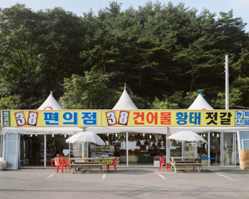
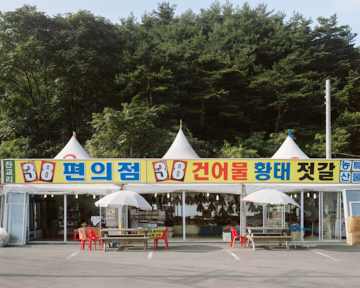


 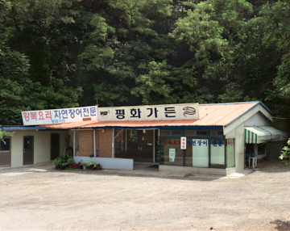
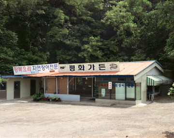


 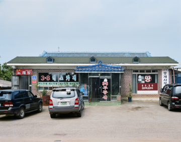
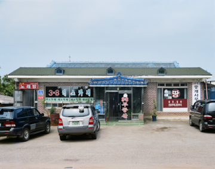
 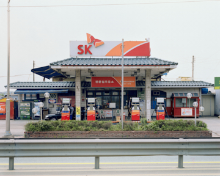
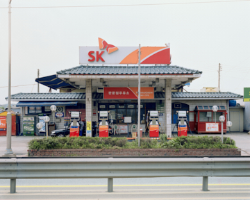
 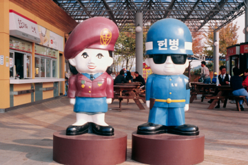
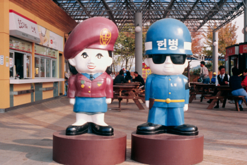

 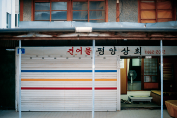
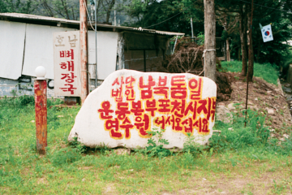
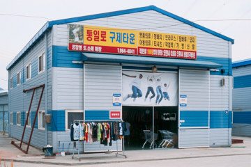
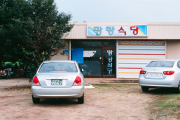
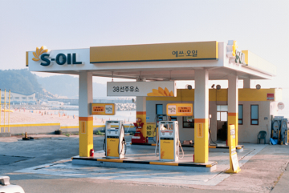
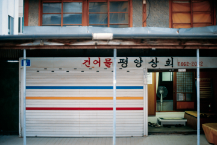
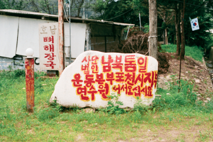
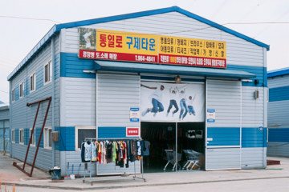
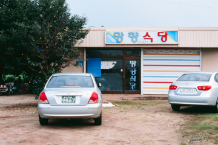
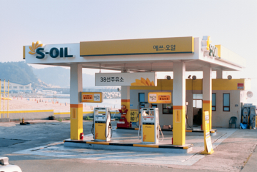
 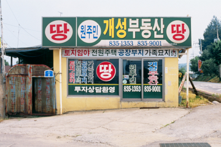
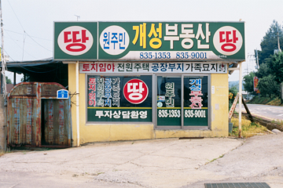
東大門〈平和市場〉は、失郷民（離散を経験した人々）の生計を目的に形成された。バラックで衣服を直して売る仕事から始まったのだ。戦争の苦痛とその後の貧しさは、おそらく平穏な暮らしへの渇望へとつながっただろう。名称は1962年から公式に用いられ、現在に至るまで続いている。時代感覚は随所に表れるものだから、今でも分断の現実を商いに用いる場所はあるはずだ、と確信していたが、それは漠然とした推測に過ぎなかった。そこで江華から高城まで自ら足を運び、確かめるほかなかった。
開城出身の義母からスンデスープの店を受け継ぎ家計をつなぐおばさん、花札の「3」と「8」を看板に描いた乾物屋、国連の象徴である月桂樹を彫り込んだ「板門店・淡水ウナギ」などもある。
1953年7月27日の休戦から57年が過ぎた。私の母はその年の2月に生まれたので、戦争の記憶はない。切迫した暮らしが戦争に代わり、以前の郷愁は祖父母にだけ残っているのだろうか。何度も歌った「私たちの願い」も、もはや耳にしない。それでも統一を疑うことはできない。歴史を共有する限り、同質意識は保たれ、統一を志向するだろう。分断と統一は歴史の一過程に他ならないからだ。
しかし、歴史意識と現在意識の対比は明瞭である。二つの集団が一つになるには、社会的緊張とコストが必要だ。統一の混乱は、戦争の一部に似ている。相対的に安定した社会は、どうしても消極的にならざるを得ない。戦後の東大門〈平和市場〉という名が示すように、「平和」のほうが先立つ要請だからである。
「平和」「統一」「開城」「望郷」「平壌」「38」などの名を掲げる小商人たちがいる。既に自分の暮らしと無関係であっても、漠然とした郷愁を商品として売る。おそらく、地域の特産を売るような感覚なのだろう。そして分断の意味も、その範囲から大きく外れない。分断の現実を抱え、それを消費しながら生きるあいだに、平和と統一の距離は次第に開いていく。
- 2020『江原国際芸術祭 ファイティン江原美術 リレー・ウェブ展示』, ウェブ — グループ展
- 2017『境界155』, ソウル市立美術館, ソウル — グループ展
- 2011『隣の人』, ギャラリー175, ソウル — グループ展